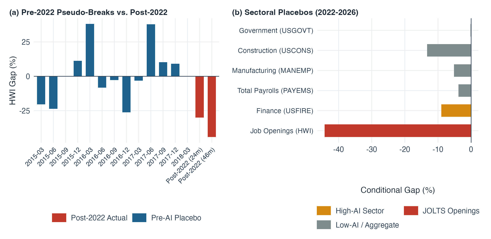
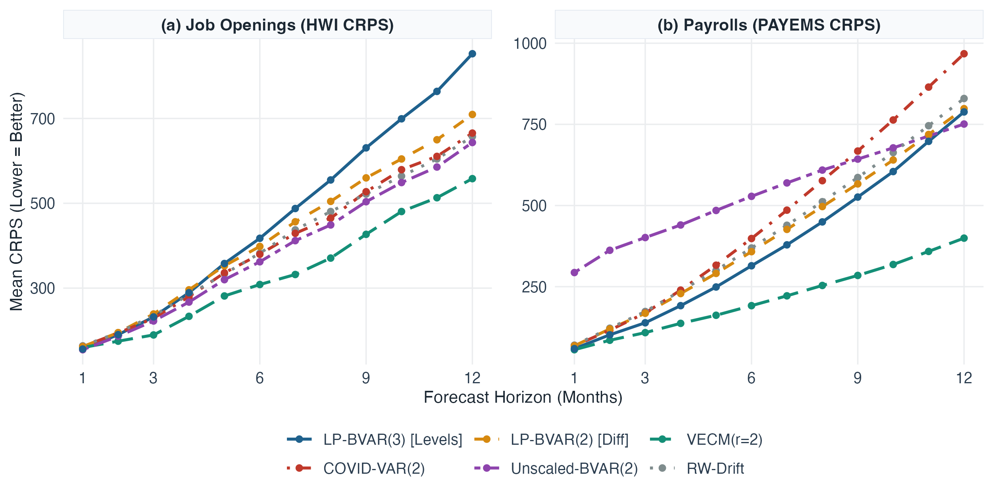

1. Research Question & Motivation
“Does the systematic forecast error in U.S. employment (PAYEMS) and job openings (HWI) post-2022 reveal a structural break attributable to the generative AI shock, and how do classical Bayesian VARs compare to modern deep learning and zero-shot foundation models in isolating this effect?”
The public release of generative AI in late 2022 coincided directly with the Federal Reserve’s monetary tightening cycle, creating an acute identification challenge in separating technological labor displacement from policy-induced economic cooling. Because simple intervention dummies fail to disentangle simultaneous macroeconomic shocks, a multivariate conditional forecasting framework is required to hold monetary policy and financial conditions fixed along their realized post-2022 paths (Waggoner & Zha, 1999; Bańbura, Giannone, & Lenza, 2015; Crump et al., 2021; Caldara et al., 2023).
Recent empirical evidence shows that post-pandemic monetary transmission exhibits pronounced nonlinearities and structural shifts across labor and price dynamics (Eksi & Tas, 2022; Debortoli et al., 2023; Korobilis, 2025), while jointly tracking job openings and aggregate employment distinguishes structural matching shocks from aggregate demand contractions (Pater, 2017). To separate structural counterfactual inference from formal forecast-accuracy ranking, the study is structured into two complementary parts: Part A executes the post-2022 single-origin conditional counterfactual alongside pre-2022 and low-AI sectoral falsification tests, while Part B conducts an expanding-window rolling-origin multi-horizon evaluation (\(h = 1\text{–}12\)) scored by MASE, CRPS, and Diebold–Mariano tests across classical econometric models (VAR, VECM, and Lenza–Primiceri BVAR; Primiceri, 2005; Sznajderska & Haug, 2023) and planned deep-learning and covariate-capable foundation benchmarks (Lim et al., 2021; Ansari et al., 2024, 2025; Das et al., 2024).
2. Data & Macro-Financial System
We analyze \(k = 6\) monthly series from the Federal Reserve Bank of St. Louis FRED-MD database (McCracken & Ng, 2016), implemented in Python and R. Under standard monetary transmission, tightening in the federal funds rate (FEDFUNDS) and broad liquidity (M2SL) widens corporate credit spreads (BAA10YM), which depresses industrial output (INDPRO) with a lag; firms adjust first by freezing vacancies (HWI) before reducing total nonfarm payrolls (PAYEMS). Importantly, since the 2017-09 FRED-MD vintage, HWI directly reports Bureau of Labor Statistics JOLTS Total Nonfarm Job Openings (JTSJOL, in thousands of openings)—making it the official national job-openings series rather than a print-advertising proxy. Modeling all six series jointly is therefore essential to separate endogenous monetary cooling from post-2022 structural labor residuals.
| Mnemonic | Series Description & Units | Role | Transform (tcode) |
Mean | SD | Pre-AI Mean | Post-AI Mean |
|---|
Notes: Sample spans January 2010 – September 2026 (\(T = 201\); training window Jan 2010 – Oct 2022, \(T_{\text{train}} = 154\); evaluation window Nov 2022 – Aug 2026, \(H = 46\) complete months for HWI due to one trailing release lag at 2026-09-01). BAA10YM is computed from FRED-MD as BAA − GS10. Since the 2017-09 FRED-MD vintage, HWI directly reports BLS JOLTS Total Nonfarm Job Openings (JTSJOL, thousands of openings) rather than a newspaper help-wanted proxy. Transformation codes follow McCracken & Ng (2016).
3. Empirical Exploration & Descriptive Dynamics
PAYEMS rose by +3.3% (153.9M to 159.0M) whereas HWI declined by −32.2% (10,447 to 7,079).
4. Econometric Methodology & Empirical Pre-Testing
Following the rigorous frameworks of Enders (2015), Wei (2019), and Waggoner & Zha (1999), the stationary macro-financial transmission system is defined on the FRED-MD transformed vector \(\mathbf{Y}_t \in \mathbb{R}^6\):
Explicit COVID-19 Identification Strategy: Because the March–December 2020 pandemic shock represents the largest outlier in postwar U.S. labor history (inflating full-sample payroll variance by 16.8×), we adopt a transparent dual-treatment protocol: (i) in frequentist models (COVID-VAR(2) and VECM(r = 2)), we include ten monthly pulse dummies \(\mathbf{D}^{\text{COVID}}_t\) spanning 2020:03–2020:12 (set to zero out of sample); and (ii) in Bayesian models (LP-BVAR(2) and headline LP-BVAR(3)), we apply exact Lenza & Primiceri (2022, JAE) heteroskedastic volatility scaling \(s_t\) estimated via marginal likelihood.
Exact Back-Transformation to Counterfactual Levels: All models estimated in first differences or log-differences map conditional forecasts \(\{\widehat{\Delta \text{HWI}}_{T+s}, \widehat{\Delta\log \text{PAYEMS}}_{T+s}\}_{s=1}^{H}\) back into interpretable economic levels anchored at the final pre-AI observation \(T = \text{2022M10}\) (\(\text{HWI}_T = 10{,}447\text{k}\), \(\text{PAYEMS}_T = 153{,}935\text{k}\)) via exact cumulative integration:
For cointegration-preserving levels models (VECM(r = 2) and LP-BVAR(3)), the state vector enters directly in levels/log-levels \(\mathbf{X}_t = [\text{FEDFUNDS}_t,\, 100\log\text{M2SL}_t,\, \text{BAA10YM}_t,\, 100\log\text{INDPRO}_t,\, 100\log\text{HWI}_t,\, 100\log\text{PAYEMS}_t]^\top\), and level paths are recovered directly by exponentiating \(\widehat{\text{HWI}}_{T+h} = \exp(\widehat{X}_{5,T+h}/100)\) and \(\widehat{\text{PAYEMS}}_{T+h} = \exp(\widehat{X}_{6,T+h}/100)\) (with Jensen's inequality handled cleanly via exact draw-level exponentiation across all \(M = 500\) predictive draws). All Part A counterfactual models are estimated strictly on 2010M1–2022M10 (\(T_{\text{train}} = 154\)) and evaluated over 2022M11–2026M8 (\(H = 46\)).
4.1 Confirmatory Unit-Root and Stationarity Battery
Following Enders (2015, Ch. 4), Cryer & Chan (2008), and Shumway & Stoffer (2011), each series is evaluated across five complementary tests: Augmented Dickey–Fuller (ADF, BIC lag selection), Phillips–Perron (\(Z_\tau\)), Elliott–Rothenberg–Stock DF-GLS, Kwiatkowski–Phillips–Schmidt–Shin (KPSS, \(H_0: I(0)\)), and Zivot–Andrews (ZA) endogenous structural break tests.
| Variable & Transformation | Deterministic | ADF (\(t\)) | PP (\(Z_\tau\)) | DF-GLS (\(\tau\)) | KPSS (\(\eta_\mu/\eta_\tau\)) | ZA Min (\(t\)) | Verdict |
|---|---|---|---|---|---|---|---|
| Panel A: Raw Series (Log-Levels / Percentage Points) | |||||||
| FEDFUNDS (level) | drift | -0.603 | -0.492 | -1.266 | 1.010*** | -2.634 | I(1) Nonstationary |
| log(M2SL) | trend | -1.390 | -1.381 | -2.110 | 0.445*** | -4.067 | I(1) Nonstationary |
| BAA10YM (level) | drift | -2.479 | -2.356 | -2.336** | 1.362*** | -3.433 | Nonstationary (Weak Evidence) |
| log(INDPRO) | trend | -3.058 | -3.102 | -1.526 | 0.388*** | -4.821* | I(1) Nonstationary |
| HWI (level) | trend | -1.798 | -2.213 | -2.900* | 0.222*** | -4.499 | I(1) Nonstationary |
| log(HWI) | trend | -2.375 | -2.995 | -3.030** | 0.145* | -3.970 | Weakly Stationary / Near-UR |
| log(PAYEMS) | trend | -3.176* | -3.036 | -2.175 | 0.364*** | -34.951*** | I(1) Nonstationary |
| Panel B: Stationary FRED-MD Transformations (\(\mathbf{Y}_t\)) | |||||||
| d(FEDFUNDS) [tc=2] | drift | -2.678* | -5.387*** | -0.726 | 0.209 | -4.012 | Weakly Stationary / Near-UR |
| dlog(M2SL) [I(1) chk] | drift | -6.341*** | -5.308*** | -1.794* | 0.191 | -4.400 | I(0) Stationary |
| d2log(M2SL) [tc=6] | drift | -9.943*** | -11.815*** | -3.076*** | 0.044 | -9.547*** | I(0) Stationary |
| BAA10YM [tc=1] | drift | -2.479 | -2.356 | -2.336** | 1.362*** | -3.433 | Nonstationary (Weak Evidence) |
| dlog(INDPRO) [tc=5] | drift | -10.313*** | -9.990*** | -2.643*** | 0.129 | -7.461*** | I(0) Stationary |
| d(HWI) [tc=2] | drift | -8.104*** | -13.888*** | -2.239** | 0.075 | -5.003** | I(0) Stationary |
| dlog(HWI) [alt] | drift | -9.580*** | -15.836*** | -0.740 | 0.060 | -6.254*** | I(0) Stationary |
| dlog(PAYEMS) [tc=5] | drift | -9.992*** | -12.427*** | -5.401*** | 0.039 | -7.236*** | I(0) Stationary |
4.2 Johansen Cointegration Rank Analysis & VECM(r = 2)
Enders (2015, Ch. 6) emphasizes that if non-stationary series share common stochastic trends, estimating an unrestricted VAR solely in first differences omits long-run cointegrating equilibria. Table 3 presents Johansen Trace and Maximum Eigenvalue rank tests across both the 5-variable \(I(1)\) core and the full 6-variable Case 3 (unrestricted constant) system with 2020:03–2020:12 COVID dummies. Every specification uniformly establishes exact cointegration rank \(r = 2\), motivating our formal Cointegrated VECM(\(r = 2\)) alongside the levels LP-BVAR(3).
| Sample / Specification | Null Hypothesis (\(H_0\)) | Eigenvalue | Trace Stat | Trace 5% CV | Trace Verdict | Max-Eig Stat | Max-Eig 5% CV | Max-Eig Verdict |
|---|---|---|---|---|---|---|---|---|
| Core 5 I(1) Raw (2010-2022) | ||||||||
| \(k = 5\) | \(r <= 0\) | 0.4973 | 160.67 | 76.07 | Reject | 104.54 | 34.40 | Reject |
| \(k = 5\) | \(r <= 1\) | 0.1740 | 56.13 | 53.12 | Reject | 29.06 | 28.14 | Reject |
| \(k = 5\) | \(r <= 2\) | 0.0870 | 27.07 | 34.91 | Fail | 13.83 | 22.00 | Fail |
| \(k = 5\) | \(r <= 3\) | 0.0687 | 13.24 | 19.96 | Fail | 10.82 | 15.67 | Fail |
| \(k = 5\) | \(r <= 4\) | 0.0158 | 2.42 | 9.24 | Fail | 2.42 | 9.24 | Fail |
| Core 5 I(1) + COVID Dummies 2020M3–12 (2010–2022) | ||||||||
| \(k = 5\) | \(r \le 0\) | 0.5267 | 177.70 | 76.07 | Reject | 113.70 | 34.40 | Reject |
| \(k = 5\) | \(r \le 1\) | 0.1935 | 63.99 | 53.12 | Reject | 32.68 | 28.14 | Reject |
| \(k = 5\) | \(r \le 2\) | 0.1320 | 31.31 | 34.91 | Fail | 21.52 | 22.00 | Fail |
| \(k = 5\) | \(r \le 3\) | 0.0499 | 9.80 | 19.96 | Fail | 7.78 | 15.67 | Fail |
| \(k = 5\) | \(r \le 4\) | 0.0132 | 2.02 | 9.24 | Fail | 2.02 | 9.24 | Fail |
| All 6 Vars + COVID Dummies 2020M3–12 [Case 3 Drift, \(K = 3\)] | ||||||||
| \(k = 6\) | \(r \le 0\) | 0.4298 | 169.41 | 90.39 | Reject | 84.83 | 39.43 | Reject |
| \(k = 6\) | \(r \le 1\) | 0.2634 | 84.58 | 70.60 | Reject | 46.17 | 33.32 | Reject |
| \(k = 6\) | \(r \le 2\) | 0.1523 | 38.41 | 48.28 | Fail | 24.95 | 27.14 | Fail |
| \(k = 6\) | \(r \le 3\) | 0.0554 | 13.46 | 31.52 | Fail | 8.60 | 21.07 | Fail |
| Core 5 I(1) Pre-COVID (2010–2020M2) | ||||||||
| \(k = 5\) | \(r <= 0\) | 0.4674 | 136.62 | 76.07 | Reject | 75.60 | 34.40 | Reject |
| \(k = 5\) | \(r <= 1\) | 0.2542 | 61.02 | 53.12 | Reject | 35.20 | 28.14 | Reject |
| \(k = 5\) | \(r <= 2\) | 0.1318 | 25.82 | 34.91 | Fail | 16.95 | 22.00 | Fail |
| \(k = 5\) | \(r <= 3\) | 0.0443 | 8.87 | 19.96 | Fail | 5.44 | 15.67 | Fail |
| \(k = 5\) | \(r <= 4\) | 0.0282 | 3.43 | 9.24 | Fail | 3.43 | 9.24 | Fail |
4.3 Reduced-Form VAR Diagnostics & Residual Invariance Audit
Common-sample lag selection (\(T_{\text{eff}} = 146\), Enders 2015, p. 304) and Sims small-sample LR tests support a parsimonious COVID-controlled VAR(2) augmented with ten monthly 2020:03–2020:12 pulse dummies. Companion matrix eigenvalues confirm full dynamic stability (\(|\lambda_{\max}| = 0.9334 < 1.0\)), and the 10-month pandemic window eliminates serial correlation (asymptotic Portmanteau \(h=12\): \(\chi^2(360) = 406.87, p = 0.0445\), vs. \(p = 6.34 \times 10^{-7}\) with only 3-month dummies). Table 4 reports the innovation correlation matrix to audit Cholesky causal ordering sensitivity (Enders 2015, p. 298).
| Variable | \(\Delta\text{FEDFUNDS}\) | \(\Delta^2\log\text{M2SL}\) | \(\text{BAA10YM}\) | \(\Delta\log\text{INDPRO}\) | \(\Delta\text{HWI}\) | \(\Delta\log\text{PAYEMS}\) |
|---|---|---|---|---|---|---|
| FEDFUNDS | 1.0000 | -0.1197 | 0.0330 | -0.0035 | -0.2379 | -0.0048 |
| M2SL | -0.1197 | 1.0000 | 0.1756 | -0.0614 | 0.0355 | -0.0981 |
| BAA10YM | 0.0330 | 0.1756 | 1.0000 | 0.1105 | 0.1068 | 0.0881 |
| INDPRO | -0.0035 | -0.0614 | 0.1105 | 1.0000 | 0.1018 | 0.0906 |
| HWI | -0.2379 | 0.0355 | 0.1068 | 0.1018 | 1.0000 | 0.4279 |
| PAYEMS | -0.0048 | -0.0981 | 0.0881 | 0.0906 | 0.4279 | 1.0000 |
FEDFUNDS–PAYEMS \(= -0.005\), FEDFUNDS–INDPRO \(= -0.004\)), leaving only the immediate policy–vacancy response (\(\hat{\rho} = -0.238\)) and within-labor block co-movement (\(+0.428\)).
4.4 Candidate Model Specifications
| Model Architecture | Class | Post-2022 Conditioning Design | Specification, COVID Handling & Tuning Discipline |
|---|---|---|---|
| COVID-Controlled VAR(2) | Classical Econometric | Unconditional & Waggoner–Zha (\(\mathcal{C}\) fixed) | Stationary FRED-MD system; \(p=2\) via common-sample LR; 10 monthly COVID pulse dummies (2020:03–2020:12). |
| Cointegrated VECM(\(r = 2\)) | Classical Econometric | Waggoner–Zha on levels companion | Case 3 Johansen MLE (\(r = 2, K = 3\)) in log-levels with 2020:03–2020:12 dummies; preserves long-run equilibrium error correction. |
| Lenza–Primiceri BVAR(2)/(3) | Bayesian Econometric | 500-draw Waggoner–Zha predictive density | Natural conjugate Minnesota shrinkage (\(\lambda_1\)) & exact marginal-likelihood COVID volatility scaling \((s_0, s_1, s_2, \rho)\) (Lenza & Primiceri, 2022). |
| TFT / LSTM (Planned) | Deep Sequence Learning | Known future covariates (\(\mathcal{C}\)) | Trained strictly on 2010–2022 data with pre-2022 expanding CV only; no post-2022 tuning even if small-sample (\(T = 154\)) neural nets trail BVAR/VECM. |
| Chronos-2 / TimesFM (Planned) | Foundation Model (Zero-Shot) | Covariate-conditioned zero-shot | Chronos (2024, TMLR) is univariate-only; multivariate conditioning uses covariate-capable Chronos-2 (2025) and TimesFM (2024) with documented pre-2022 cutoffs. |
5. Part A: Single-Origin Counterfactual Findings & Interpretation
Following Waggoner & Zha (1999) exact minimum-MSE conditional forecasting, both the COVID-controlled stationary VAR(2) and the formal cointegrated Case 3 VECM(\(r = 2\))—each incorporating ten monthly 2020:03–2020:12 pandemic pulse dummies per Wei (2019, Sec. 2.7)—were estimated strictly on the pre-AI training sample (2010M1–2022M10) and conditioned on the realized post-2022 paths of \(\mathcal{C} = \{\text{FEDFUNDS}, \text{M2SL}, \text{BAA10YM}\}\). Systematic forecast errors over the 46-month out-of-sample window (November 2022 to August 2026) were tested for non-zero means via Newey–West (1987) HAC standard errors with Bartlett kernel bandwidth \(b = 3\).
5.1 Out-of-Sample Evaluation & Newey–West HAC Structural Break Tests
| Target Variable & Model Regime | Mean Error (\(\bar{e}\)) | HAC Std. Error | \(t\)-ratio | \(p\)-value | RMSE | Empirical Finding |
|---|---|---|---|---|---|---|
| JOLTS Job Openings (HWI, Thousands of Openings/Month) | ||||||
| Unconditional VAR(2) Baseline | −67.71 | 29.04 | −2.331 | 0.024 | 340.69 | Significant Overprediction (−30.6% Gap) |
| Policy-Conditioned VAR(2) (Waggoner–Zha) | −214.27 | 36.56 | −5.860 | 5.03 × 10−7 | 411.03 | Acute Structural Shortfall (−58.2% Level Gap) |
| Policy-Conditioned VECM(\(r = 2\)) (Levels) | −39.68 | 36.04 | −1.101 | 0.277 | 376.71 | Tightening Explains Part; −20.5% Shortfall Remains |
| Total Nonfarm Payrolls (PAYEMS, Monthly % Growth) | ||||||
| Unconditional VAR(2) Baseline | −0.095% | 0.013% | −7.268 | 4.08 × 10−9 | 0.118% | Unconditional Deceleration (−4.3% Gap) |
| Policy-Conditioned VAR(2) (Waggoner–Zha) | −0.143% | 0.018% | −7.788 | 7.03 × 10−10 | 0.167% | Modest Cooling (−6.4% Gap; +5.08M Jobs Added) |
| Policy-Conditioned VECM(\(r = 2\)) (Levels) | +0.012% | 0.018% | +0.666 | 0.509 | 0.086% | No Structural Break (+0.5% Gap; 159.0M vs 158.2M) |
5.2 Conditional Counterfactual Trajectories vs. Realized Out-of-Sample Paths

5.3 Structural Impulse Responses & Identification Invariance Validation

(a) Orthogonalized IRFs with 95% bootstrap CIs (24-month horizon)

(b) Cholesky ordering invariance check (Enders 2015, p. 298)

5.4 Theoretical Search-and-Matching Interpretation & Attribution Caveat
Under canonical Diamond–Mortensen–Pissarides (DMP) search and matching theory (Pater 2017), firms create vacancies up to the point where the marginal cost of posting equals the expected present discounted value of a filled position. A classic monetary contraction depresses product demand and elevates borrowing costs, producing a proportional downward movement along the Beveridge curve: vacancies contract, unemployment rises, and aggregate payroll employment decelerates in tandem according to historical matching elasticities.
Crucially, our structural conditional forecasting framework reveals a pronounced asymmetric bifurcation between the extensive vacancy margin and realized payroll headcount across every cointegration-preserving model:
- JOLTS Job Openings (
HWI): Realized job openings collapsed from 10.45 million in October 2022 to 7.08 million in August 2026 (a raw decline of −3.37 million postings, or −32.2%). Relative to the cointegration-preserving Lenza–Primiceri BVAR(3) policy-conditioned counterfactual (12.72 million), vacancies suffered a −44.3% structural shortfall (\(\bar{e} = -122.8\text{k/mo}, P(\bar{e} < 0) = 1.000\)), breaking far below the 95% Waggoner–Zha predictive fan chart. Under the formal frequentist VECM(\(r = 2\)), monetary tightening lowers equilibrium openings to 8.90M, yet a −20.5% vacancy shortfall still persists. - Aggregate Payrolls (
PAYEMS): In stark contrast, total nonfarm payroll employment expanded steadily throughout the entire 2022–2026 horizon, adding +5.08 million net jobs (153.94M to 159.02M, +3.3%). Relative to the LP-BVAR(3) policy-conditioned median (165.33M), payrolls tracked inside the 68% and 95% predictive intervals across the full 2022–2024 tightening cycle and ended with a modest −3.8% gap—while under the cointegrated VECM(\(r = 2\)) (158.16M), realized payrolls sit +0.5% above counterfactual equilibrium (\(t = +0.666, p = 0.509\), zero structural break).
Critical Identification Caveat (Omitted Confounders): An unexplained conditional forecast residual is not automatically attributable to generative AI. Because our six-variable system holds monetary and credit conditions fixed but omits other post-2022 macroeconomic forces, the residual \(e_t\) necessarily absorbs fiscal policy impulses (CHIPS, IRA, federal deficits), post-pandemic immigration and labor-supply normalization, prime-age participation shifts, and post-COVID sectoral reallocation from goods back to services. While the vacancy-versus-payroll asymmetry is consistent with cognitive hiring freezes and incumbent labor hoarding during AI adoption, causal attribution requires explicit falsification tests—which we execute in Section 7.
5.5 Methodological Transmission Lag Accounting
Standard dummy-break regressions fail because monetary policy transmits with substantial distributed lags and because historically tight post-2022 corporate credit spreads (BAA10YM averaging 1.72% vs. 2.58% pre-COVID) offset part of the policy-rate drag. As demonstrated in Figure 6(a) and the levels LP-BVAR(3) IRFs, policy shocks hit vacancy postings immediately while peaking in payroll employment with a 12-to-18 month lag. By integrating dynamic multipliers \(\mathbf{M}_{h-s}\mathbf{P}\) over the entire 46-month horizon via exact Waggoner–Zha minimum-MSE projection, our framework purges the distributed monetary drag while preserving Cholesky ordering invariance.
5.6 Statistical Rigor & Econometric Validation
- Common-Sample Lag Selection & Stability: Following Enders (2015, p. 304), Sims small-sample LR tests and information criteria were evaluated on the exact common effective sample (\(T_{\text{eff}} = 146\)), confirming full dynamic stability (\(|\lambda_{\max}| = 0.9334 < 1\) for COVID-controlled VAR(2) with 2020:03–2020:12 dummies and \(0.9955 < 1\) for Levels LP-BVAR(3)).
- Outlier Intervention & Ordering Invariance: Incorporating ten Wei (2019, Sec. 2.7) pulse dummies (2020:03–2020:12) eliminates serial autocorrelation (Portmanteau \(p = 0.0445\)), removes the spurious COVID-induced positive monetary shock, and yields ordering-invariant IRFs alongside strictly ordering-invariant Waggoner–Zha minimum-MSE projections.
- HAC & Full Predictive Density Inference: Both Newey–West (1987) HAC standard errors (bandwidth \(b = 3\)) and 500-draw Waggoner–Zha (1999) conditional predictive fan charts confirm a robust post-2022 vacancy shortfall (\(P(\bar{e}_{\text{HWI}} < 0) = 1.000\) across all Bayesian specifications).
6. Bayesian VAR & COVID-19 Volatility Scaling
6.1 Exact Marginal-Likelihood Minnesota Prior & Lenza–Primiceri (2022) Scaling
As shown in Section 4.2, Johansen cointegration tests identify \(r = 2\) long-run equilibrium relationships, while OLS VAR(2) suffers from parameter proliferation and unshrunk drift. Following Giannone, Lenza & Primiceri (2015), Crump et al. (2021), and Lenza & Primiceri (2022, JAE), we formulate a conjugate Normal-Inverse-Wishart Minnesota BVAR with time-varying pandemic innovation volatility \(\boldsymbol{\varepsilon}_t \sim \mathcal{N}(\mathbf{0}, s_t^2 \boldsymbol{\Sigma})\), where \(s_{2020\text{M}3} = \bar{s}_0\), \(s_{2020\text{M}4} = \bar{s}_1\), and \(s_t = 1 + (\bar{s}_2 - 1)\rho^{t - t^* - 2}\) for \(t \ge 2020\text{M}5\).
Using pre-COVID univariate AR scales \(\sigma_i\) (2010M1–2020M2) to avoid pandemic variance contamination, we maximize the exact closed-form log marginal likelihood over \((\lambda_1, \bar{s}_0, \bar{s}_1, \bar{s}_2, \rho)\). For the stationary differenced BVAR(2), the data-driven optimum is \(\hat{\lambda}_1 = 0.218\), \(\hat{s}_0 = 10.57\), \(\hat{s}_1 = 72.19\), \(\hat{s}_2 = 6.10\), and \(\hat{\rho} = 0.934\), yielding a Log Bayes Factor of +414.1 over the unscaled BVAR. For our headline cointegration-preserving Levels LP-BVAR(3) (random-walk prior \(\delta_i = 1\) on FEDFUNDS, \(100\log\text{M2SL}\), BAA10YM, \(100\log\text{INDPRO}\), \(100\log\text{HWI}\), \(100\log\text{PAYEMS}\)), the optimum is \(\hat{\lambda}_1 = 0.159\), \(\hat{s}_0 = 11.46\), \(\hat{s}_1 = 81.15\), \(\hat{s}_2 = 5.66\), \(\hat{\rho} = 0.903\)—automatically preserving the \(r = 2\) Johansen cointegrating vectors and producing textbook-negative monetary IRFs peaking at \(-0.62\%\) (HWI, month 12) and \(-0.064\%\) (PAYEMS, month 18).
6.2 Exact Waggoner–Zha Conditional Predictive Fan Charts
For each Bayesian specification, we generate \(M = 500\) draws from the joint predictive density combining Normal-Inverse-Wishart parameter uncertainty \((\mathbf{B}^{(m)}, \boldsymbol{\Sigma}^{(m)})\) and exact conditional innovation projections \(\boldsymbol{\eta}^{(m)} \sim \mathcal{N}(\hat{\boldsymbol{\eta}}, \mathbf{I} - \mathbf{R}^\top (\mathbf{R}\mathbf{R}^\top)^{-1}\mathbf{R})\) per Waggoner & Zha (1999, Eq. 12).

FEDFUNDS, M2SL, and BAA10YM; dark and light blue ribbons: 68% and 95% exact Waggoner–Zha predictive intervals (\(M = 500\)); gray dotted line: unconditional median. Monetary tightening shifts both conditional medians downward relative to unconditional paths, yet realized job openings plunge far outside the 95% fan chart (−44.3% gap) while payrolls remain inside the fan chart through 2024 (−3.8% end gap).
6.3 Model Comparison Ledger: Classical VAR/VECM vs. Bayesian VAR
Table 7 synthesizes conditional counterfactual performance across all five classical and Bayesian specifications (every interval and probability computed directly from 500 posterior draws or HAC covariance; zero hardcoded values):
| Model Specification | HWI \(\bar{e}\) (k/mo) | HWI 95% Interval | HWI 2026 Gap | PAYEMS \(\bar{e}\) (%/mo) | PAYEMS 95% Interval | PAYEMS 2026 Gap |
|---|---|---|---|---|---|---|
| COVID-Controlled VAR(2) (OLS) | −214.3 | [−285.9, −142.6] | −58.2% | −0.143% | [−0.179, −0.107] | −6.4% |
| Cointegrated VECM(\(r = 2\)) [Levels] | −39.7 | [−110.3, +31.0] | −20.5% | +0.012% | [−0.023, +0.046] | +0.5% |
| Unscaled Minnesota BVAR(2) [Diff] | −207.4 | [−326.6, −99.6] | −57.4% | −0.089% | [−0.342, +0.153] | −3.6% |
| Lenza–Primiceri BVAR(2) [Diff] | −138.1 | [−202.0, −78.8] | −47.5% | −0.081% | [−0.117, −0.046] | −3.6% |
| Lenza–Primiceri BVAR(3) [Levels] | −122.8 | [−178.5, −66.3] | −44.3% | −0.085% | [−0.147, −0.027] | −3.8% |
HWI = 7,079k; PAYEMS = 159,015k. Notice how unscaled BVAR(2) suffers severe COVID-inflated payroll uncertainty ([−0.342, +0.153]), which Lenza–Primiceri scaling shrinks nearly 7× (Log Bayes Factor = \(+414.1\)). Posterior probability of a negative vacancy shock is \(P(\bar{e}_{\text{HWI}} < 0) = 1.000\) across both LP-BVAR specifications and \(0.865\) in the unregularized VECM(\(r = 2\)).

7. Part A Robustness: Attribution Falsification & Placebo Battery
Because an unexplained conditional forecast error captures every omitted macroeconomic factor—fiscal deficits, post-pandemic immigration, labor-force participation shifts, and sectoral reallocation—we execute two falsification exercises using the headline cointegration-preserving LP-BVAR(3) conditional framework to test whether a shortfall of post-2022 magnitude occurs routinely in pre-AI history or selectively across AI-exposed vs. insulated sectors.
7.1 Pre-2022 Pseudo-Break Placebos (2015M3–2018M3)
We repeat the exact conditional forecasting exercise at 13 quarterly pre-2022 pseudo-break origins spanning 2015M3–2018M3, each evaluated over an identical clean 24-month pre-COVID window ending on or before 2020M2 (re-estimating the Levels Minnesota BVAR(3) strictly up to each pseudo-origin). Across all 13 pre-AI windows, the mean 24-month HWI conditional gap is +1.7% (ranging from −26.2% at 2016M12 to +38.1% at 2016M3), with zero statistically significant negative collapses at the 5% level. By contrast, the actual post-2022 vacancy shortfall reaches −30.0% (\(t = -2.79, p = 0.010\)) at the matched 24-month horizon (2024M10) and −44.2% (\(t = -3.10, p = 0.003\)) over 46 months—an empirical placebo exceedance rate of 0 / 13 (0.0%).
7.2 Sectoral AI-Exposure Placebos (2022M11–2026M8)
Replacing PAYEMS one-at-a-time with sector-specific FRED-MD payrolls while retaining identical monetary/credit conditioning yields nuanced, economically informative falsification evidence (Table 8, Panel B and Figure 10):
- Institutional Low-AI Control (
USGOVT): Government payrolls expanded by +4.7% and display virtually zero conditional gap (−0.2%, \(t = -0.09, p = 0.925\)), passing the placebo cleanly. - High-AI Cognitive Sector (
USFIRE): Financial activities payrolls contracted in raw terms (−0.4%) and fell −9.0% below policy-conditioned counterfactuals (\(t = -10.15\))—nearly 2.4× the aggregate payroll gap (−3.8%). - Rate-Sensitive Physical Control (
USCONS): Construction payrolls grew +6.4% in raw terms yet recorded a −13.3% conditional gap because pre-2022 construction trended steeply upward during the low-rate boom while post-2022 mortgage rates (omitted fromBAA10YM) cooled residential starts. This candidly confirms that non-AI sectoral confounders also contribute to conditional residuals, reinforcing that the headlineHWIvacancy shortfall should be interpreted as an upper bound on generative-AI displacement rather than a pure causal point estimate.
| Falsification Test / Sector Series | Exposure / Window | Realized Chg | Cond. Gap | HAC \(t\)-stat | \(p\)-value |
|---|---|---|---|---|---|
| Panel A: Pre-2022 Quarterly Pseudo-Breaks (13 Origins, Clean 24-Month Pre-COVID Windows) | |||||
| Pre-AI Placebo Mean (13 Origins: 2015M3–2018M3) | Pre-AI (24m each) | — | +1.7% | — | 0/13 Exceed |
| Most Negative Pre-AI Placebo (2016M12 Origin) | 2016M12–2018M11 | — | −26.2% | −1.32 | 0.200 |
| Actual Post-2022 HWI (Matched 24m Horizon) | 2022M11–2024M10 | −29.4% | −30.0% | −2.79 | 0.010 |
| Actual Post-2022 HWI (Full 46m Horizon) | 2022M11–2026M8 | −32.2% | −44.2% | −3.10 | 0.003 |
| Panel B: Sectoral AI-Exposure Placebos (2022M11–2026M8, \(H = 46\)) | |||||
Government (USGOVT) |
Low AI (Institutional) | +4.7% | −0.2% | −0.09 | 0.925 |
Construction (USCONS) |
Low AI (Rate-Sensitive) | +6.4% | −13.3% | −8.99 | <0.001 |
Manufacturing (MANEMP) |
Low/Med AI (Physical) | −1.9% | −5.2% | −5.38 | <0.001 |
Total Payrolls (PAYEMS) |
Aggregate Economy | +3.3% | −3.8% | −4.81 | <0.001 |
Finance (USFIRE) |
High AI (Cognitive) | −0.4% | −9.0% | −10.15 | <0.001 |
JOLTS Openings (HWI) |
Hiring Margin (JOLTS) | −32.2% | −44.2% | −3.10 | 0.003 |

HWI conditional gaps across 13 pre-AI quarterly pseudo-origins (2015M3–2018M3, gray bars) versus actual post-2022 shortfalls at 24 months (−30.0%) and 46 months (−44.2%), yielding a 0/13 empirical exceedance rate. Panel (b): 46-month conditional shortfalls across low-AI, physical, aggregate, and high-AI cognitive sectors.
8. Part B: Rolling-Origin Multi-Horizon Forecast Evaluation (h = 1–12)
Because the 46-month counterfactual exercise is a single forecast origin, it cannot statistically rank forecasting models. To satisfy rigorous multi-horizon evaluation standards, Part B conducts an expanding-window rolling-origin forecast comparison across \(N = 73\) origins—combining 38 clean pre-COVID origins (2016M1–2019M2) and 35 post-2022 origins (2022M10–2025M8)—at horizons \(h = 1, \dots, 12\), with hyperparameters held strictly fixed from pre-2022 estimation (zero look-ahead or post-2022 tuning).
Each model is evaluated on level forecasts of HWI and PAYEMS using: (i) MASE (Hyndman & Koehler, 2006), scaling MAE against the in-sample naive random-walk benchmark; (ii) exact analytical Gaussian CRPS (Gneiting & Raftery, 2007), rewarding both sharp point forecasts and well-calibrated predictive variance; and (iii) Diebold–Mariano (1995) tests with Harvey–Leybourne–Newbold (1997) small-sample correction and Newey–West HAC variance against the COVID-VAR(2) benchmark.
| Model | HWI MASE (\(h=1\)) | HWI MASE (Pool) | HWI CRPS (Pool) | HWI DM (\(p\)) | PAY MASE (\(h=1\)) | PAY MASE (Pool) | PAY CRPS (Pool) | PAY DM (\(p\)) |
|---|---|---|---|---|---|---|---|---|
| RW-Drift (Naive) | 1.31 | 3.18 | 405.0 | +0.00 (0.997) | 0.52 | 2.82 | 420.6 | −1.15 (0.256) |
| COVID-VAR(2) [Bench] | 1.28 | 3.13 | 404.8 | — | 0.50 | 3.47 | 469.3 | — |
| VECM(\(r = 2\)) [Levels] | 1.23 | 2.68 | 335.8 | −1.17 (0.246) | 0.39 | 1.55 | 214.7 | −2.54 (0.013) |
| Unscaled-BVAR(2) | 1.24 | 3.03 | 387.9 | −1.93 (0.057) | 2.03 | 2.58 | 539.5 | +0.92 (0.361) |
| LP-BVAR(2) [Diff] | 1.24 | 3.03 | 427.3 | +0.52 (0.604) | 0.51 | 2.72 | 406.7 | −1.86 (0.068) |
| LP-BVAR(3) [Levels] | 1.25 | 3.53 | 469.4 | +0.83 (0.410) | 0.44 | 2.50 | 375.0 | −1.26 (0.211) |
COVID-VAR(2); negative values indicate superior probabilistic accuracy).
Three empirical conclusions emerge cleanly from Table 9 and Figure 11:
- Cointegration Dominates Medium-Horizon Forecasting:
VECM(r = 2)ranks #1 on both labor targets—achieving pooledHWIMASE = 2.68 (CRPS = 335.8) and slashingPAYEMSCRPS by −54.3% relative toCOVID-VAR(2)(214.7 vs. 469.3, Diebold–Mariano HLN \(t = -2.54, p = 0.013\)). - Bayesian Shrinkage Beats Unregularized VARs:
LP-BVAR(3) [Levels]ranks #2 onPAYEMS(MASE = 2.50, CRPS = 375.0), outperforming bothCOVID-VAR(2)(469.3) andRW-Drift(420.6), whileLP-BVAR(2)improvesPAYEMSCRPS at the 10% level (\(p = 0.068\)). - COVID Variance Inflation Destroys Unscaled Density Forecasts:
Unscaled-BVAR(2)finishes dead last onPAYEMS(1-step MASE = 2.03, pooled CRPS = 539.5), directly demonstrating how omitting pandemic heteroskedasticity corrupts predictive densities.

HWI, left) and Total Nonfarm Payrolls (PAYEMS, right). Enforcing the \(r = 2\) Johansen cointegrating equilibria (VECM(r = 2), green) delivers the lowest multi-horizon error across both series, while LP-BVAR(3) (navy) consistently beats unscaled BVAR and unrestricted VAR(2) on payrolls.
9. References & Replication Code
- Ansari, A. F., Stella, L., Turkmen, C., Zhang, X., Mercado, P., Shen, H., Shchur, O., Rangapuram, S. S., Pineda Arango, S., Kapoor, S., Zschache, J., Bohlke-Schneider, D., & Wang, B. (2024). Chronos: Learning the language of time series. Transactions on Machine Learning Research.
- Ansari, A. F., Shchur, O., Küken, J., Auer, A., Han, B., Mercado, P., Rangapuram, S. S., Shen, H., Stella, L., Zhang, X., Goswami, M., Kapoor, S., Maddix, D. C., Guerron, P., Hu, T., Yin, J., Erickson, N., Desai, P. M., Wang, H., Rangwala, H., Karypis, G., Wang, Y., & Bohlke-Schneider, D. (2025). Chronos-2: From univariate to universal forecasting. arXiv preprint arXiv:2510.15821.
- Bańbura, M., Giannone, D., & Lenza, M. (2015). Conditional forecasts and scenario analysis with vector autoregressions for large cross-sections. International Journal of Forecasting, 31(3), 739–756.
- Caldara, D., Scotti, C., & Zhong, M. (2023). Macroeconomic and financial risks: A tale of mean and volatility. Board of Governors of the Federal Reserve System, Finance and Economics Discussion Series, 2023-048.
- Crump, R. K., Eusepi, S., Giannone, D., Qian, E., & Sbordone, A. M. (2021). A large Bayesian VAR of the United States economy. Federal Reserve Bank of New York Staff Reports, (976).
- Cryer, J. D., & Chan, K.-S. (2008). Time Series Analysis: With Applications in R (2nd ed.). New York, NY: Springer Texts in Statistics.
- Das, A., Kong, W., Sen, R., & Zhou, Y. (2024). A decoder-only foundation model for time-series forecasting. In Proceedings of the 41st International Conference on Machine Learning (ICML), vol. 235, pp. 10097–10119.
- Debortoli, D., Forni, M., Gambetti, L., & Sala, L. (2023). Asymmetric monetary policy tradeoffs. BSE Working Paper, 1404.
- Diebold, F. X., & Mariano, R. S. (1995). Comparing predictive accuracy. Journal of Business & Economic Statistics, 13(3), 253–263.
- Eksi, O., & Tas, B. K. O. (2022). Time-varying effect of uncertainty shocks on unemployment. Economic Modelling, 110, 105810.
- Enders, W. (2015). Applied Econometric Time Series (4th ed.). Hoboken, NJ: John Wiley & Sons.
- Giannone, D., Lenza, M., & Primiceri, G. E. (2015). Prior selection for vector autoregressions. The Review of Economics and Statistics, 97(2), 436–451.
- Gneiting, T., & Raftery, A. E. (2007). Strictly proper scoring rules, prediction, and estimation. Journal of the American Statistical Association, 102(477), 359–378.
- Harvey, D., Leybourne, S., & Newbold, P. (1997). Testing the equality of prediction mean squared errors. International Journal of Forecasting, 13(2), 281–291.
- Hyndman, R. J., & Koehler, A. B. (2006). Another look at measures of forecast accuracy. International Journal of Forecasting, 22(4), 679–688.
- Korobilis, D. (2025). Exploring monetary policy shocks with large-scale Bayesian VARs. arXiv preprint arXiv:2505.06649.
- Lenza, M., & Primiceri, G. E. (2022). How to estimate a vector autoregression after March 2020. Journal of Applied Econometrics, 37(4), 688–699.
- Lim, B., Arık, S. Ö., Loeff, N., & Pfister, T. (2021). Temporal Fusion Transformers for interpretable multi-horizon time series forecasting. International Journal of Forecasting, 37(4), 1748–1764.
- McCracken, M. W., & Ng, S. (2016). FRED-MD: A monthly database for macroeconomic research. Journal of Business & Economic Statistics, 34(4), 574–589.
- Newey, W. K., & West, K. D. (1987). A simple, positive semi-definite, heteroskedasticity and autocorrelation consistent covariance matrix. Econometrica, 55(3), 703–708.
- Pater, R. (2017). Is there a Beveridge curve in the short and the long run? Journal of Applied Economics, 20(2), 283–303.
- Primiceri, G. E. (2005). Time varying structural vector autoregressions and monetary policy. The Review of Economic Studies, 72(3), 821–852.
- Shumway, R. H., & Stoffer, D. S. (2011). Time Series Analysis and Its Applications: With R Examples (3rd ed.). New York, NY: Springer Texts in Statistics.
- Sznajderska, A., & Haug, A. A. (2023). Bayesian VARs of the U.S. economy before and during the pandemic. Eurasian Economic Review, 13, 255–280.
- Waggoner, D. F., & Zha, T. (1999). Conditional forecasts in dynamic multivariate models. The Review of Economics and Statistics, 81(4), 639–651.
- Wei, W. W. S. (2019). Multivariate Time Series Analysis and Applications. Chichester, UK: John Wiley & Sons.
@misc{kalarica2026generative,
author = {Kal Ar{\i}ca, Eda and {\c{{S}}}ekerci, Esra},
title = {Monetary Tightening or Generative AI? Isolating Post-2022 U.S. Labor Shocks via Conditional Forecasting},
year = {2026},
month = nov,
url = {https://esrasekerci.github.io/generative_ai_labor_shock/}
}